제가 좋아하는 것들에 대해 소개해보겠습니다.
푸들 두 마리를 키우고 있습니다. 이름은 멍이와 뚱이입니다. 서로 핏줄은 안 이어져 있지만 닮았어요. 셀프 미용을 해서 좀 꼬질 거지견 느낌 나는 게 매력인 것 같습니다. 멍이가 누나라서 뚱이 잡도리를 좀 많이하는데, 밖에만 나가면 둘이 한 패가 돼서 한 명이 짖으면 따라 짖고 그래요.
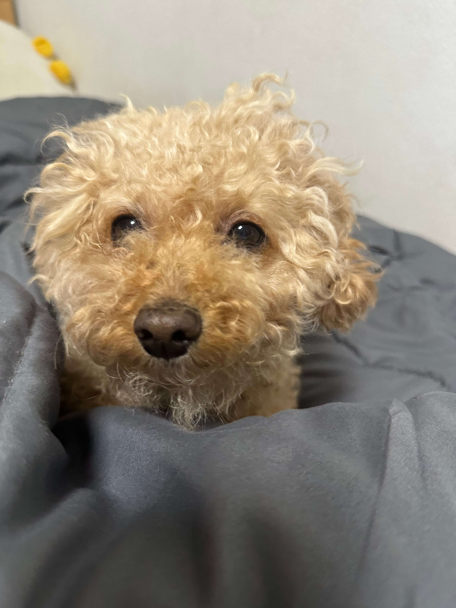
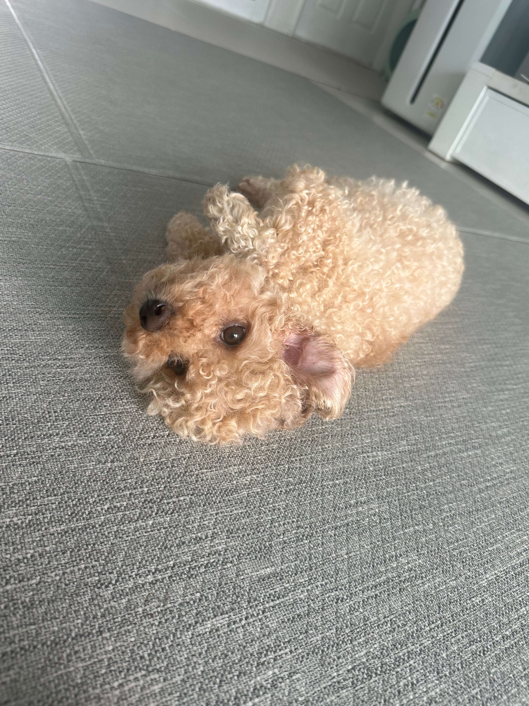
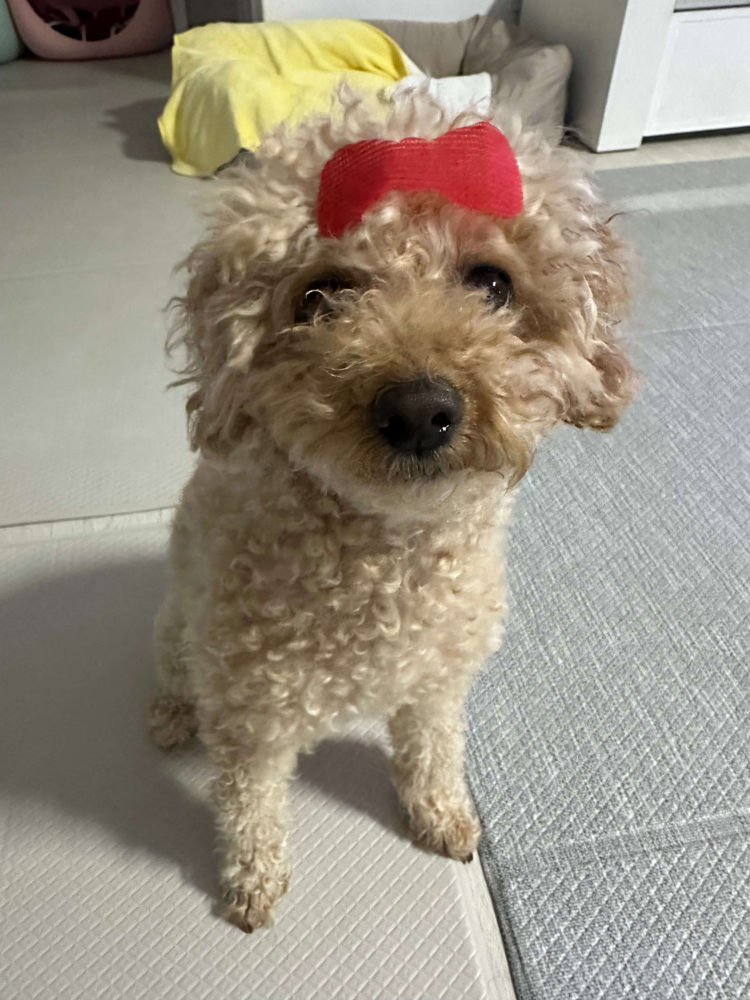
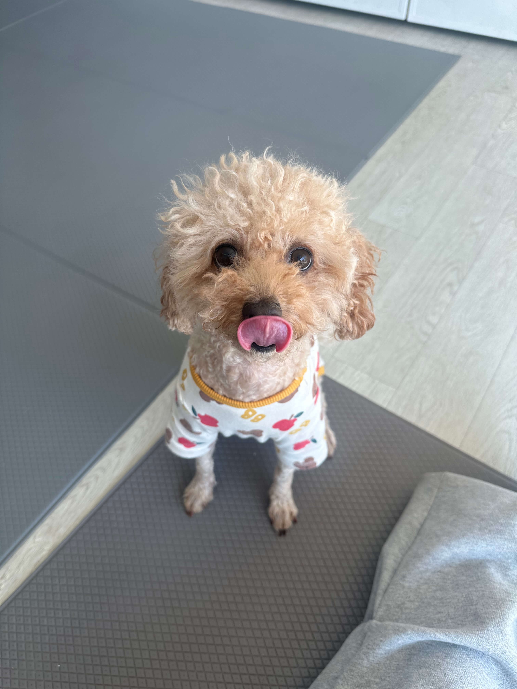
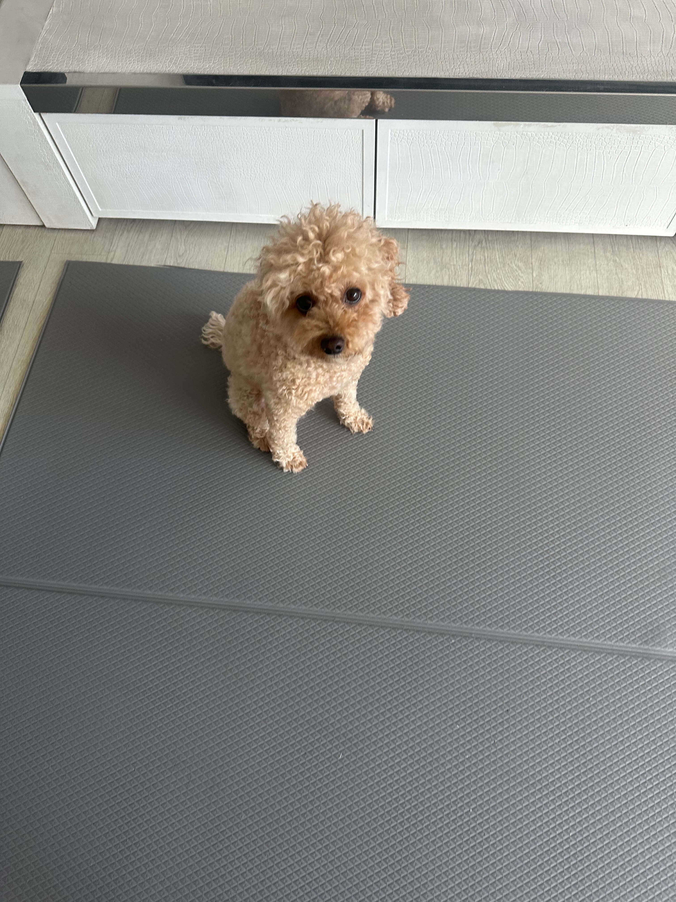
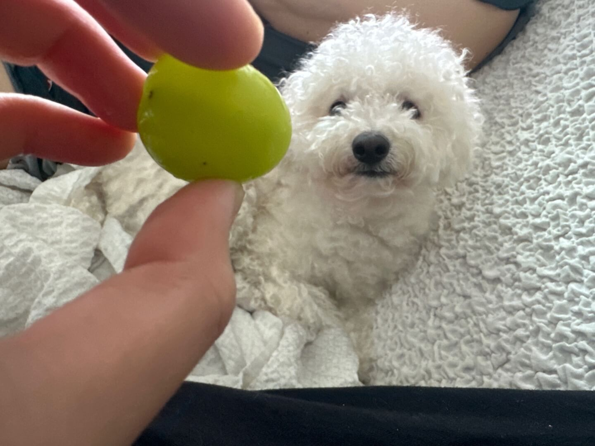
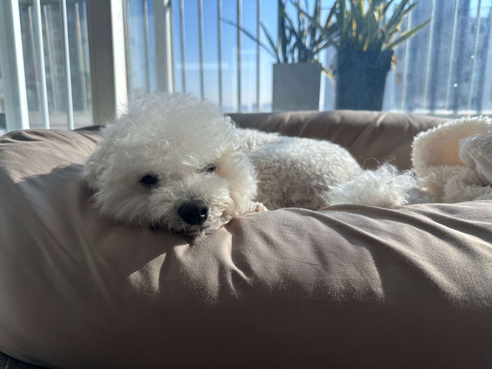
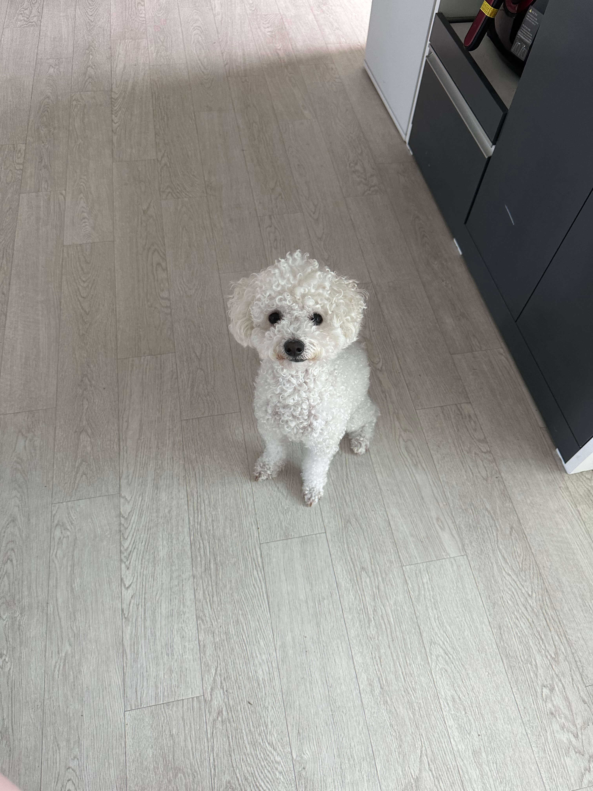
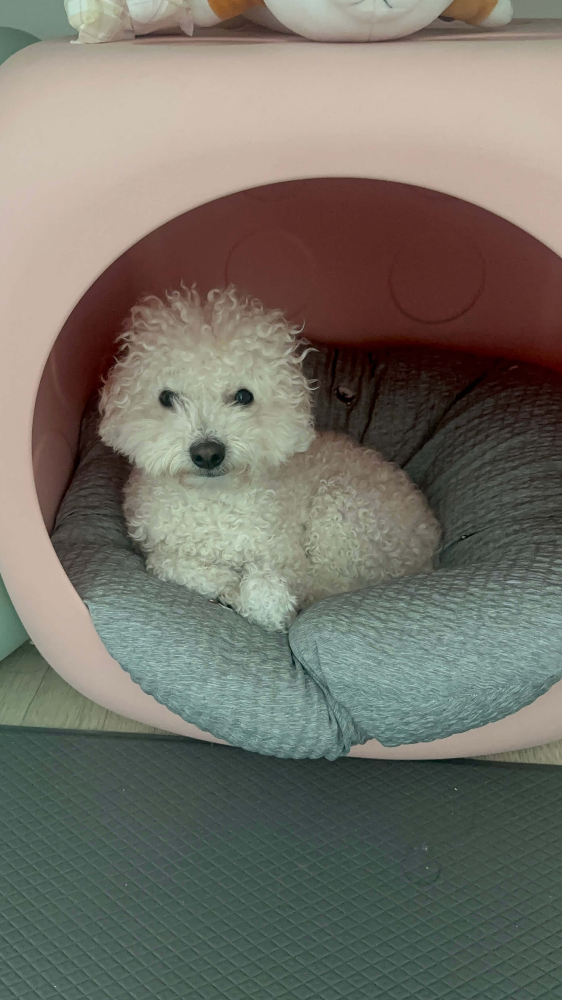
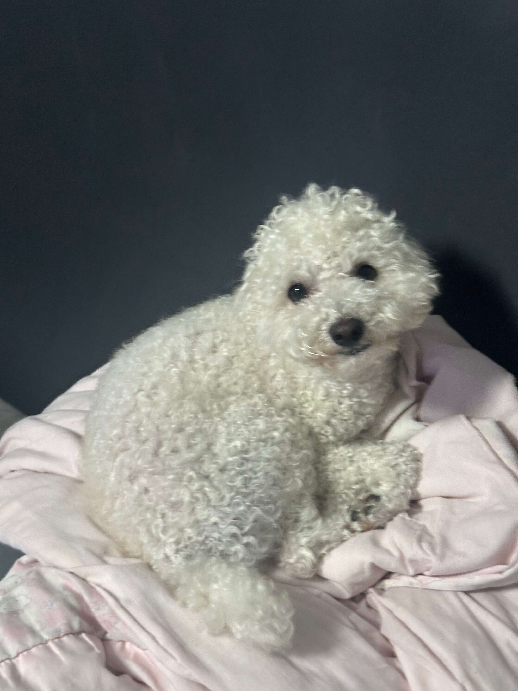
스크롤 →
중학생때부터 해외 록 밴드 음악을 많이 들었어요. 주로 좋아하는 장르는
하드록입니다. 내한 공연 가는 것도 좋아해요.
비용만 빼면.
원래 올 해 4월에도 공연이 하나 예정되어있었는데요, 공연이 11월로
밀렸어요. 티켓팅은 작년 8월에 했는데... 내 돈 주고 보는 것도 쉽지
않습니다. 최애 밴드는 '건즈앤로지스' 라는 밴드입니다. 작년에
내한공연해서 보고왔어요.
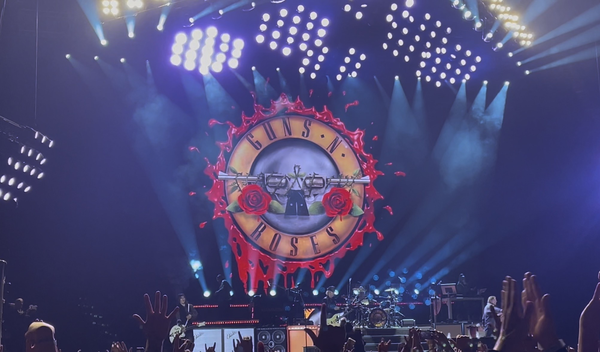
(영상을 넣고 싶은데 제 목소리가 너무 많이나와서 사진이라도 첨부합니다.)
록 밴드의 영향으로 일렉기타를 조금 칠 줄 압니다. 대외에서 밴드도 몇 번 했었는데, 슬슬 고학년이고 학업이 우선시되다 보니 다 까먹었네요... 혹시 내가 음악 취향이 비슷하다. 연락주세요. 하드록 말고도 좋아해요. 얼터너티브, 그런지, emo, 메탈 등등...
새거든 빈티지든 옷 구경하는거 좋아해요. 비싼 것 한 두개 사서 영원히
입는 편이라 옷이 많진 않습니다.
학교에선 단벌신사 수준으로 같은 티만 입어요. 프리티 이런거 아니고
진짜 같은 옷.
같이 옷가게 구경하실 분 구해요. 빈티지샵 한곳에서 1시간 이상 머무르기
감당 가능하신 분..! 원합니다. 브랜드 빈티지 좋아하시는분 환영. 가보고
싶어서 저장해둔 빈티지샵은 많은데 몇 곳 방문 안해봤어요. 쇼핑 메이트
구합니다.